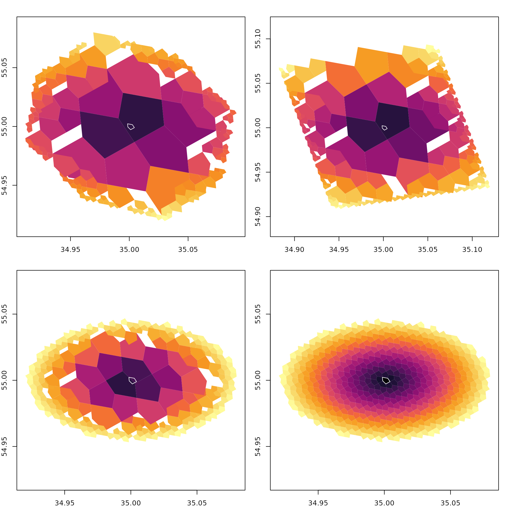
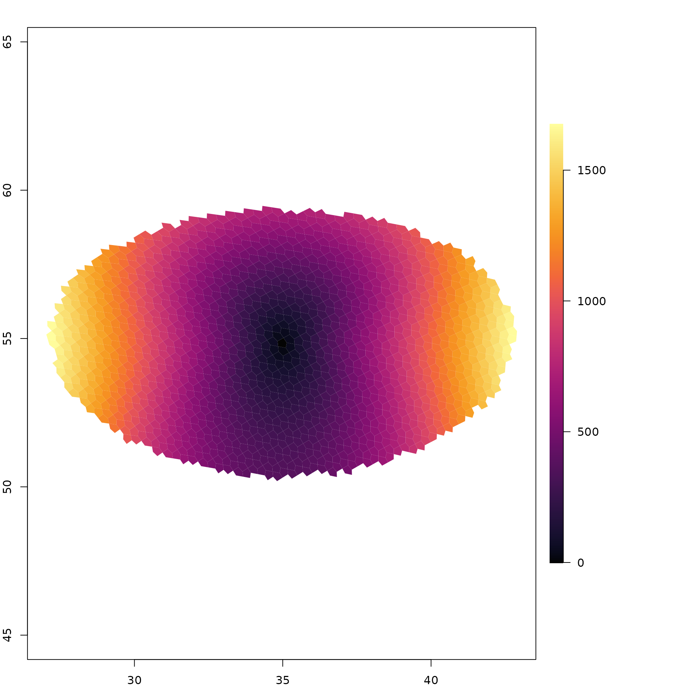

Selecting cells around a point
Pick an origin cell and use a5_spherical_cap() to grab
every cell whose centre falls within a given great-circle radius. The
result is compacted, so pass it through a5_uncompact() for
a uniform-resolution grid.
origin <- a5_lonlat_to_cell(35, 55, resolution = 14)
disk <- a5_grid_disk(origin, k = 20, vertex = FALSE)
disk_vertex <- a5_grid_disk(origin, k = 20, vertex = TRUE)
cap_compact <- a5_spherical_cap(origin, radius = 5000)
cap <- a5_uncompact(cap_compact, resolution = 14)a5_grid_disk() selects cells by hop count rather than
metric distance. With vertex = FALSE (default) only
edge-sharing neighbours are traversed (4-connected), producing a diamond
shape. Setting vertex = TRUE includes corner-sharing
neighbours too (8-connected), giving a squarer footprint.
Distance heatmap
Compute the distance from the origin to every cell in the cap (or disk) and visualise it as a colour gradient.
dcap <- a5_cell_distance(origin, cap, units = "km")
dcap_compact <- a5_cell_distance(origin, cap_compact, units = "km")
ddisk <- a5_cell_distance(origin, disk, units = "km")
ddisk_vertex <- a5_cell_distance(origin, disk_vertex, units = "km")
pal <- hcl.colors(256, "Inferno")
oldpar <- par(mfrow = c(2, 2), mar = c(2, 2, 2, 1))
for (info in list(
list(s = disk, d = ddisk, lab = "Grid disk (edges)"),
list(s = disk_vertex, d = ddisk_vertex, lab = "Grid disk (vertices)"),
list(s = cap_compact, d = dcap_compact, lab = "Spherical cap (compact)"),
list(s = cap, d = dcap, lab = "Spherical cap")
)) {
brk <- seq(0, max(as.numeric(info$d)), length.out = 257)
cols <- pal[findInterval(as.numeric(info$d), brk, all.inside = TRUE)]
plot(a5_cell_to_boundary(info$s), col = cols, border = NA, asp = 1,
main = info$lab)
plot(a5_cell_to_boundary(origin), border = "#ffffffff", add = TRUE)
}
Distance radiates smoothly from the centre — cells near the origin are dark, cells at the rim are bright. The origin cell is shown with a white border for reference.
Distance methods
a5R supports three distance methods: haversine (great-circle), geodesic (WGS84 ellipsoid via Karney 2013), and rhumb (loxodrome / constant-bearing). For short distances they are nearly identical; differences grow with distance.
wide_origin <- a5_lonlat_to_cell(35, 55, resolution = 8)
wide_cap <- a5_uncompact(
a5_spherical_cap(wide_origin, radius = 500000),
resolution = 8
)
hav <- a5_cell_distance(wide_origin, wide_cap, units = "m", method = "haversine")
geo <- a5_cell_distance(wide_origin, wide_cap, units = "m", method = "geodesic")
diff_m <- as.numeric(geo - hav)
brk <- seq(min(diff_m), max(diff_m), length.out = 257)
cols <- pal[findInterval(diff_m, brk, all.inside = TRUE)]
oldpar <- par(no.readonly = TRUE)
layout(matrix(c(1, 2), nrow = 1), widths = c(4, 1))
par(mar = c(2, 2, 2, 1))
plot(a5_cell_to_boundary(wide_cap), col = cols, border = NA, asp = 1,
main = "Geodesic \u2212 Haversine (m)")
par(mar = c(9, 0, 9, 9))
image(1, seq(min(diff_m), max(diff_m), length.out = 256),
t(seq_along(pal)), col = pal, axes = FALSE, xlab = "", ylab = "")
axis(4, las = 1)
The difference is near zero at the centre and grows to ~1675 m at the rim (~500 km away).